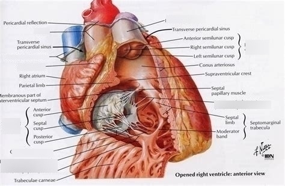

Right Ventricle
The right ventricle is one of the four chambers of the heart. Its primary role is to pump deoxygenated blood to the lungs, where it can pick up oxygen and release carbon dioxide.

Anatomy of the Right Ventricle
- Location: Below the right atrium, it receives blood and pumps it to the lungs.
- Shape & Structure: Triangular and thinner than the left ventricle.
- Tricuspid Valve: Between right atrium and ventricle; prevents backflow.
- Pulmonary Valve: Between right ventricle and pulmonary artery.
Function of the Right Ventricle
It works as part of the pulmonary circulation system – carrying blood to the lungs for oxygenation.
Process:
1. Blood Reception
Deoxygenated blood enters via tricuspid valve into the relaxed right ventricle.
2. Ventricle Filling
During diastole, blood fills the right ventricle, and tricuspid valve closes after filling.
3. Contraction and Pumping
During systole, blood is pumped via pulmonary valve into pulmonary artery toward lungs.
4. Gas Exchange
Blood picks up oxygen in alveoli and releases CO₂.
5. Oxygenated Blood Returns
Returns via pulmonary veins to the left atrium for circulation to the body.
Clinical Importance
- Pulmonary Hypertension: Increases load on right ventricle, can cause heart failure.
- Right Ventricular Failure: Leads to swelling, fatigue, shortness of breath.
- Congenital Defects: E.g., Tetralogy of Fallot impacts right ventricle structure.
Working Summary
The right ventricle pumps deoxygenated blood to the lungs. It coordinates with the left heart side for complete circulation.